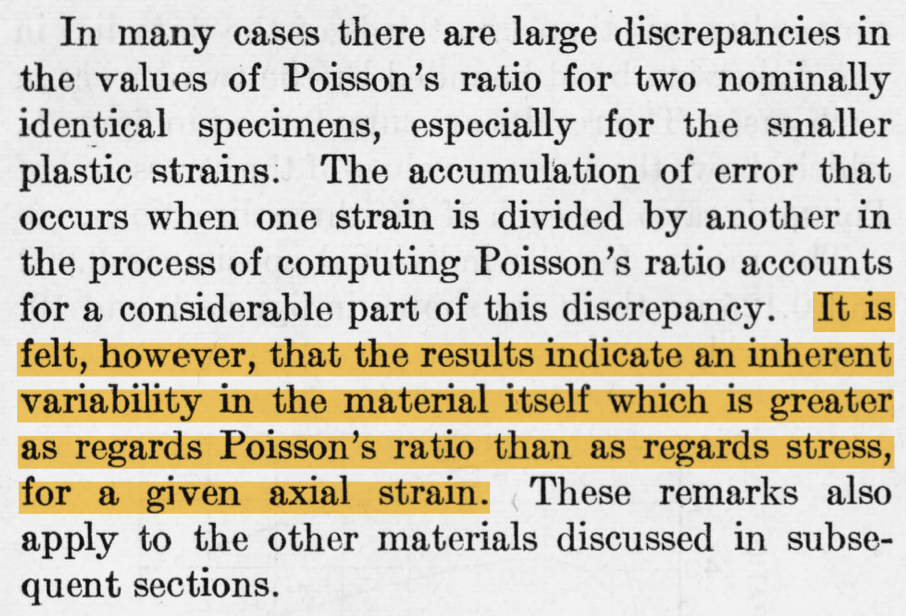

c03-stang
Contents
c03-stang¶
Purpose: When designing structures such as bridges, boats, and planes, the design team needs data about material properties. Often when we engineers first learn about material properties through coursework, we talk about abstract ideas and look up values in tables without ever looking at the data that gave rise to published properties. In this challenge you’ll study an aluminum alloy dataset: This will give you a better sense of the challenges underlying published material values.
We will also use grama to connect these material properties to engineering outcomes: This will give you a sense for how variability enters into engineering decision-making.
In this challenge, you will load a real dataset, wrangle it into tidy form, and perform EDA to learn more about the data.
Informed Consent¶
As a reminder, this course is part of a study of engineers’ behavior. While not all parts of the course are part of the study, the homeworks (challenges) are.
We will analyze your answers to this homework, and may quote this work as part of published research.
You can ask to have your responses excluded from the study after the interview by sending us an email. Please remember that this is required to participate in the professional development course. Before starting this assignment, do you consent to sharing your work with the study?
I agree to share my responses with the study
(Please type your name here)
import grama as gr
DF = gr.Intention()
%matplotlib inline
# For assertion
from pandas.api.types import is_numeric_dtype
Background¶
In 1946, scientists at the Bureau of Standards tested a number of Aluminum plates to determine their elasticity and Poisson’s ratio [1]. These are key quantities used in the design of structural members, such as aircraft skin under buckling loads. These scientists tested plats of various thicknesses, and at different angles with respect to the rolling direction.
from grama.data import df_stang_wide
df_stang_wide
Setup¶
q1 Tidy the data¶
Tidy df_stang_wide to produce df_stang. You should have column names thick, alloy, angle, E, nu. Make sure the angle variable is of correct type. Filter out any invalid values.
Hint: This is far easier if you use the special ".value" argument for names_to.
## TASK: Tidy df_stang_wide
df_stang = (
df_stang_wide
## WRITE YOUR CODE HERE
# task-end
)
df_stang
Use the following tests to check your work.
# Correct columns
assert \
set(df_stang.columns) == set(["thick", "alloy", "angle", "E", "mu"]), \
"Incorrect columns in df_stang"
# Dimensions
assert \
(df_stang.shape[0] <= 27), \
"Too many rows; did you pivot the data?"
assert \
(df_stang.shape[0] <= 26), \
"Too many rows; did you filter the invalid values?"
assert \
(df_stang.shape[0] == 26), \
"Too few rows; did you filter *only* invalid values?"
# Types
assert \
(is_numeric_dtype(df_stang["angle"])), \
"angle columns is not numeric; make sure to convert this column"
EDA¶
q2 EDA without visualization¶
Perform a basic EDA on the aluminum data without visualization. Use your analysis to answer the questions under observations below.
## TASK: Perform EDA *without visualization* here
## Top-level facts?
## Distinct alloys?
## Distinct angles?
## Distinct thicknesses?
Observations:
Do you see identical values for the material properties?
(Your response here)
How many aluminum alloys are in this dataset? How do you know?
(Your response here)
What angles were tested?
(Your response here)
Were all angles tested with the same number of observations?
(Your response here)
What thicknesses were tested?
(Your response here)
q3 Error or real variability?¶
The variability we see in the material properties E, mu could be erroneous, real, or some mix of the two. Let’s read a bit from the original paper to see what the original investigators thought about their data. Read the following passage, and answer the questions under observations below.

Observations
Based on what the authors wrote, do they believe that the observed variability is purely error?
(Your response here)
Is there likely to be real variability in the observed material properties?
(Your response here)
Try doing a websearch for
"elasticity of aluminum"; you are likely to find results that quote a single value forE. What does your previous observation tell us about the limitations of this “single number” view of material properties?
Assess a Claim¶
We can use a combination of visualization tools and critical thinking to do useful work: You’ll practice this next.
q4 Compare evidence against a claim¶
Consider the following definition:
“A material’s property (or material property) is an intensive property of some material, i.e. a physical property that does not depend on the amount of the material.”[2]
Note that the “amount of material” would vary with the thickness of a tested plate. Does the following graph support or contradict the following claim?
Claim: Elasticity
Eis an intensive material property.
Inspect the graph below, and answer the questions under observations below.
# NOTE: No need to edit; run and inspect
(
df_stang
>> gr.ggplot(gr.aes("E", "mu", color="factor(thick)"))
+ gr.geom_point(size=4)
+ gr.scale_color_discrete(name="Thickness (in)")
+ gr.theme_minimal()
+ gr.labs(
x="Elasticity (ksi)",
y="Poisson's Ratio (-)",
)
)
Observations
Does this graph support or contradict the claim above?
(Your response here)
Is the evidence conclusive?
(Your response here)
q5 Check the data collection methods¶
Read the following section from the original paper, and answer the questions below.

Observations
In q3 we saw variation in the material properties
E, muwith thickness. One possible explanation for that variation is that material properties can vary with thickness—hence, they are not intensive properties. What alternative explanation does this section from the paper suggest?(Your response here)
Study Consequences With a Model¶
The material properties E and mu are important for numerous engineering design problems. To illustrate how variability in data relates to engineering considerations, we’ll study the data in light of a specific context.
Model: Buckling plate¶
A plate under compression is at risk of buckling: bowing inwards, leading to a reduction in the provided compression resisting the inward forces. If the buckling plate is used as a structural member (such as the top skin of an airplane wing), then the critical stress at which the plate buckles is an important design consideration.
There are simple analytic models for the critical stress of a plate buckling. Your next task is to implement this model in grama.
For convenience, the units of the Stang et al. dataset and other input variables are given below:
Variable |
Meaning |
Units |
|---|---|---|
|
Elasticity |
kips/in^2 == 1000 psi |
|
Poisson’s ratio |
- |
|
Length |
in |
|
Width |
in |
|
Thickness |
in |
|
Wavenumber |
- |
q6 Implement a model for a buckling plate¶
Implement the buckling plate model, given by the following equations:
where
Note that m is the “wavenumber”; that is, the number of ripples in the bending shape.
Provide the critical stress \(\sigma_{cr}\) in units of psi.
## NOTE: This scaffolding will get you started
md_plate = (
gr.Model("Plate critical buckling stress")
>> gr.cp_vec_function(
fun=lambda df: gr.df_make(
k_cr=(df.m * df.b / df.a + df.a / df.m / df.b)**2
),
var=["a", "b", "m"],
out=["k_cr"],
)
## TASK: Complete the model to provide the sigma_cr output
)
md_plate
Use the following to check your work.
## NOTE: No need to edit, use this to check your work
df_plate_test = (
md_plate
>> gr.ev_df(df=gr.df_make(
a=1,
b=1,
t=0.125,
E=10500,
mu=0.32,
m=1,
))
)
print(df_plate_test)
assert \
not (abs(df_plate_test.sigma_cr[0] - 1.886228e3) < 1e-3), \
"Incorrect sigma_cr; did you remember to convert E from kips to lbf?"
assert \
not (abs(df_plate_test.sigma_cr[0] - 1.886228e6) < 1e-3), \
"Incorrect sigma_cr; double-check your work"
Two contexts¶
Remember that models and data must be interpreted in a context. You will consider two different contexts below, in order to interpret the results.
q7 Interpret results, context 1¶
The following code sweeps the model over various aspect ratios (length / width) and wavenumbers m, and computes the critical buckling stress. It also considers the variability observed in the material properties E, mu and reports this as a band about each curve (as the min and max observed).
Inspect the plot below, and answer the questions under observe.
## NOTE: No need to edit; run and inspect
(
df_stang
>> gr.tf_filter(DF.thick == 0.032)
>> gr.tf_rename(t="thick")
# Sweep over additional variables
>> gr.tf_outer(
df_outer=gr.df_grid(
m=[1, 2, 3],
a=gr.linspace(6, 48, 25),
b=12,
)
)
# Use the model as a transformation (evaluation synonym)
>> gr.tf_md(md_plate)
# Compute summaries
>> gr.tf_group_by(DF.a, DF.m, DF.b)
>> gr.tf_summarize(
sigma_cr_min=gr.colmin(DF.sigma_cr),
sigma_cr_mean=gr.mean(DF.sigma_cr),
sigma_cr_max=gr.colmax(DF.sigma_cr),
)
# Visualize the results
>> gr.ggplot(gr.aes("a / b", color="factor(m)"))
+ gr.geom_ribbon(
gr.aes(ymin="sigma_cr_min", ymax="sigma_cr_max"),
linetype="dashed",
fill=None,
)
+ gr.geom_line(gr.aes(y="sigma_cr_mean"))
+ gr.scale_y_continuous(limits=(500, 2000))
+ gr.scale_color_discrete(name="Wavenumber")
+ gr.theme_minimal()
+ gr.labs(
x="Aspect Ratio (-)",
y="Critical Buckling Stress (psi)"
)
)
Observe
Suppose you were making a decision about what aspect ratio of plate to use, deciding between values of AR == 1 and AR == 1.5. Your goal is to make the structure more efficient; to provide a higher critical buckling stress with the least weight possible.
At an aspect ratio of 1, which buckling mode (wavenumber) will be the most concerning?
(Your response here)
At an aspect ratio of 2, which buckling mode (wavenumber) will be the most concerning?
(Your response here)
How does the variability in buckling strength due to material properties compare with the variability due to aspect ratio?
(Your response here)
Would it be necessary to consider the variability of material properties for making decisions about the aspect ratio? Say we were deciding between
AR == 1andAR == 1.5.(Your response here)
q8 Interpret results, context 2¶
Next you’ll interpret results from the model in a different context. Run the following code, inspect the visual, and answer the questions under observations below.
## NOTE: No need to edit; run and inspect
(
df_stang
>> gr.tf_filter(DF.thick == 0.032)
>> gr.tf_drop("thick")
# Sweep over thicknesses
>> gr.tf_outer(
df_outer=gr.df_grid(
t=gr.linspace(0.030, 0.04, 25),
a=12 * 1.5,
b=12,
m=2,
)
)
# Use model as a transform
>> gr.tf_md(md_plate)
# Compute summaries
>> gr.tf_group_by(DF.t)
>> gr.tf_summarize(
sigma_cr_min=gr.colmin(DF.sigma_cr),
sigma_cr_mean=gr.mean(DF.sigma_cr),
sigma_cr_max=gr.colmax(DF.sigma_cr),
)
# Visualize
>> gr.ggplot(gr.aes("t"))
+ gr.geom_hline(yintercept=1000, color="grey", size=1.5)
+ gr.geom_segment(
data=gr.df_make(
t=0.0333,
y=1000-200,
yend=1000,
),
mapping=gr.aes("t", "y", xend="t", yend="yend"),
color="salmon",
)
+ gr.geom_segment(
data=gr.df_make(
y=1000 * 1.25,
t=0.03,
tend=0.0372,
),
mapping=gr.aes("t", "y", xend="tend", yend="y"),
color="blue",
)
+ gr.geom_line(gr.aes(y="sigma_cr_min"), linetype="dashed")
+ gr.geom_line(gr.aes(y="sigma_cr_mean"))
+ gr.geom_line(gr.aes(y="sigma_cr_max"), linetype="dashed")
+ gr.theme_minimal()
+ gr.labs(
x="Plate Thickness (in)",
y="Critical Buckling Stress (psi)"
)
)
Observations
Suppose the plate will be subjected to a compressive stress of 1000 psi, and your goal is to pick the minimum-thickness possible while ensuring the plate will not buckle.
Would a plate of thickness
t == 0.0333in be safe? (Shown by salmon-colored line.) Why or why not?(Your response here)
A colleague suggests using a factor of safety of
1.25to increase the critical buckling stress in order to deal with the material variability. Compared to the variability observed, is this margin too small, too large, or just right?(Your response here)
References¶
[1] Stang, Greenspan, and Newman, “Poisson’s ratio of some structural alloys for large strains” (1946) Journal of Research of the National Bureau of Standards, pdf link
[2] Wikipedia, List of material properties, accessed 2020-06-26, link
[3] Wikipedia, Buckling: Plate buckling, accessed 2022-01-09, link